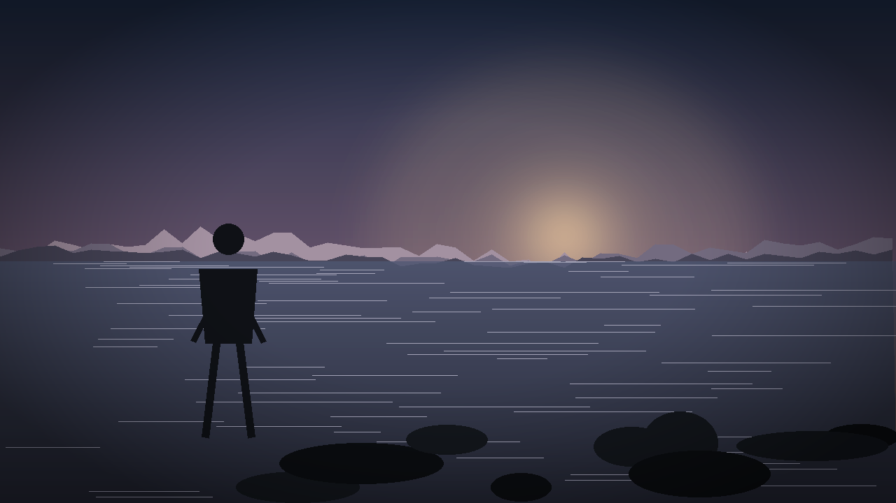

演示用的合成画面。真实流程里这一层来自 MP4：视频转3D 节点会抽帧、估深度、估相机轨迹，
再把它切成 2~4 层深度卡片。
点右上角「打开导演台」：
· 拖动环绕全场，滚轮缩放，右键平移
· 「机位」模式拖动橙色球改看向点；改焦距看构图变化
· 「取当前视角为机位」把当前视角变成这个镜头
· 「物体」模式选中人物替身，改位置 / 身高 / 姿势
· 底部时间轴攒机位关键帧，回到 ComfyUI 后点「保存到节点」，
预演图会按新机位重新渲染，直接接 MiniMax H3 的 <Picture N> 参考。